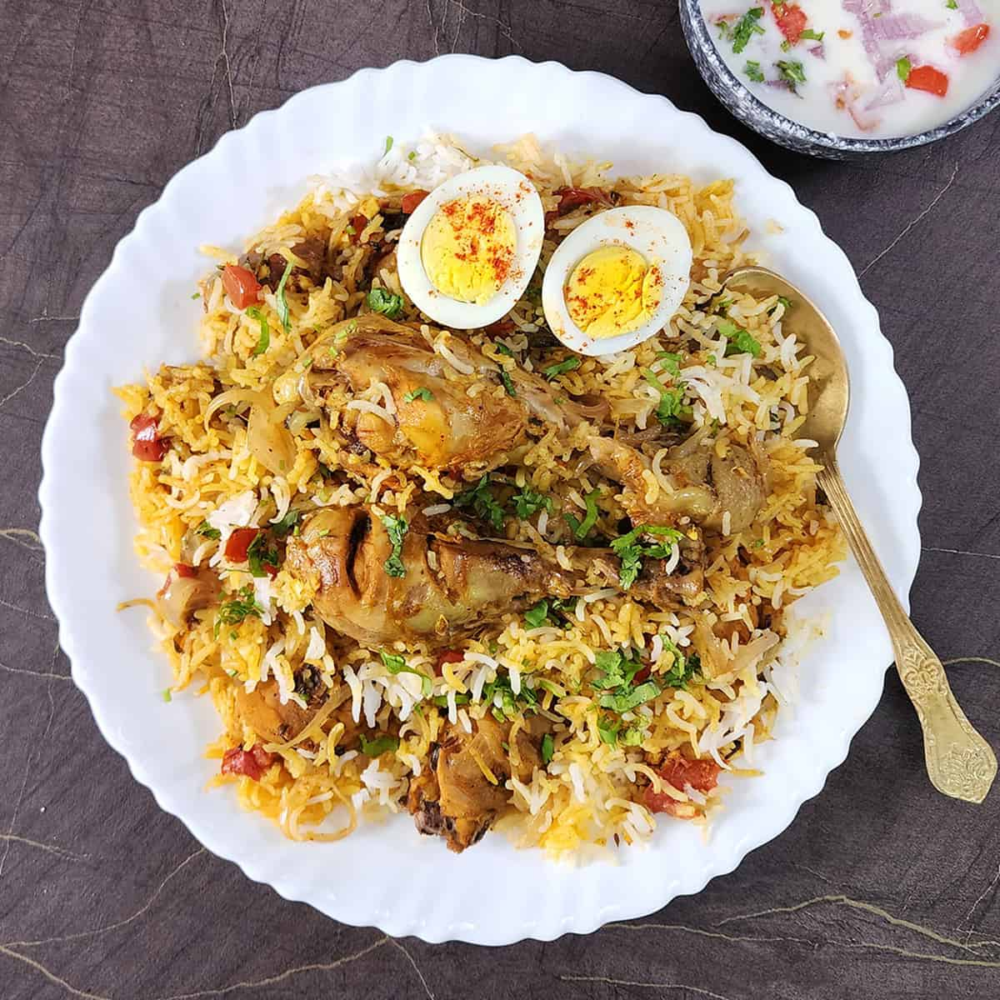

Chicken Biryani
Home

Image credit: Cook with Kushi
Description
Biryani is a mixed rice dish traditionally made with rice, meat (chicken, goat, beef), seafood (prawns or fish), or vegetables, and spices. It was present in Mughal-era India, though whether it was created there is debated. It is thought to derive from a Persian rice dish, either pilau or birinj biryan. The dish makes use of slow-cooking as in Persian pilau, combined with Persian-style yoghurt-marinated meat and a spicy Indian style of cooking; it was likely developed in the Mughal court kitchens. It is also possible that biryani was brought to South India before the Mughal era, or that pilau was brought to India and biryani was developed from it before being adopted by the Mughals.
Biryani is one of the most popular dishes in South Asia and among the South Asian diaspora. The dish is often associated with the region's Muslim population in particular, but is nevertheless a mainstream culinary staple embraced by every demographic. Similar dishes are prepared in many other countries, often with local variations, and often brought there by South Asian diaspora populations. Biryani is the most-ordered dish on Indian online food ordering and delivery services, is used in weddings and celebrations throughout the region, and has been described as the most popular dish in India.
Ingredients
- 300 grams of basmati rice cooked and cooled
- 600 grams of Boneless chicken thighs cut to bite size pieces
- 3 tablespoons of greek yoghurt
- 1/2 teaspoons of turmeric powder
- 1/4 teaspoons of mild chilli powder
- 3 tablespoons of vegetable oil or ghee
- 4 green cardamom pods
- 1 teaspoon of cumin seeds
- 200 grams of white onion thinly sliced
- 160 grams of roughly chopped tomatoes
- 1 tablespoon of tomato puree
- 2 bird eye green chillies slit lengthwise
- 1 tablespoon of ginger and garlic paste (1” ginger and 6 garlic cloves)
- 1 teaspoon of coriander powder
- Salt to taste
- A generous pinch of saffron soaked in warm milk
- 1/2 taspoon of garam masala
- 2 tablespoons of mint leaves (chopped)
- 2 tablespoons of coriander leaves (chopped)
Steps
- Marinate the chicken in greek yoghurt, turmeric, chilli powder and salt. Set aside and marinate for 20 minutes or overnight.
- Heat the oil in a heavy bottom saucepan over medium heat. Add the green cardamom and cumin seeds fry for a few seconds. Add the sliced onion and fry for 10-12 minutes over a medium flame. Add the chopped tomatoes and fry stirring well for 3 minutes. Mash with the back of the spoon as they soften. Add the tomato puree and continue to fry for a further minute. Add the slit chillies along with the ginger and garlic paste. Fry for a minute.
- Add the coriander powder, stir well and turn the heat low. Now add the marinated chicken mixing well. Now turn the heat back to medium and continue cooking the chicken for 3-4 minutes to seal the chicken pieces. Season to taste. Lower the heat and simmer with the lid on for 5 minutes. Stir the chicken half way through cooking making sure it doesn’t stick to the bottom of the pan. Add 50 mls water if it is too thick.
- Take the pan off the heat and put half the rice over the chicken followed by half the saffron milk, pinch of garam masala, 1 tbsp mint and 1 tbsp coriander. Layer the remaining rice and add the rest of the garnish ingredients.
- Put the lid back on and put the saucepan back on a very low flame for 5 minutes. Turn the heat off and leave the biryani to rest for 10 minutes. Serve warm with a choice of raita and onion salad.
Recipe credit: Maunika Gowardhan